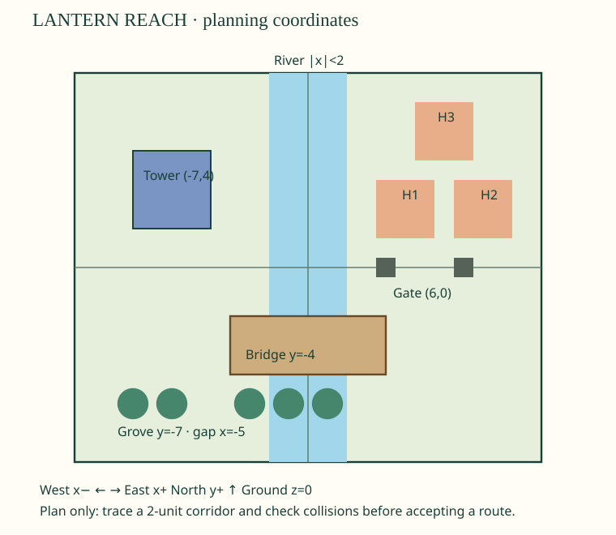

Learn first,then try
Open your day’s page. Begin with “Learn this before doing today’s work,”follow two worked examples,and try the guided questions. Your teacher will discuss them. Then complete the marked must-do work and take the check. Every check item links back to its explanation.
What are we doing?
We are making ONE fantasy settlement in ten class periods. You plan and test it;your teacher operates Blender. Each day,open that day’s page and do its four numbered work sections on paper or in your usual school document. You do not need to install anything.
Every day: read→watch one short worked example→write your own design/code/trace→compare with a partner→teacher submits the class request→keep working→check the result→turn in your evidence and six-question check.
The teacher selects ideas from your proposals. An idea can earn full learning credit even if the class chooses a different design. Extra choices begin after your required work.
A class world plan and the first terrain slab
List the people’s needs → Show who does what
DAY 2A build plan for the SAME world; no new geometry required
Complete the five module rows → Test your plan with a partner
DAY 3One tower added to the accepted ground scene
Draw and label our tower → Predict the checks before we run
DAY 4An eight-plank bridge across the river
Write eight explicit instructions → Compare and change the design
DAY 5Three related homes from one reusable procedure
Label the procedure → Make the recipe reusable
DAY 6A grove with a deliberately empty path position
Trace every candidate → Change and test the decision
DAY 7A passable gate built from three separate pieces
Prove why the faulty gate fails → Test the corrected gate
DAY 8Two sign designs; distinguish AI use from learning
Explain training versus use → Make two usable signs
DAY 9One tested, integrated class world with a repair priority
Write expectations first → Decide one repair
DAY 10An individual explanation plus an archived class world
Choose one module and gather proof → Explain and question in pairs
The SAME world grows each day

This is our plan,not a screenshot of a completed Blender scene. Your teacher will tell you which features have actually been built.